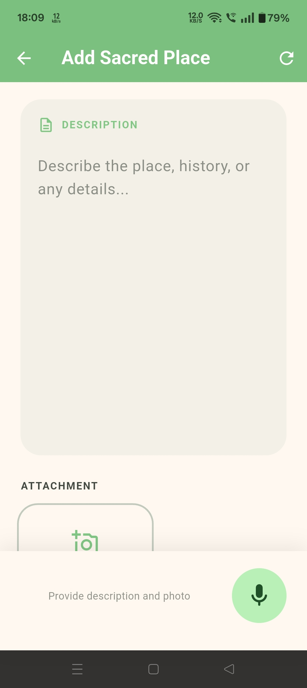

01
Customer Reach
Many artisans are still outside suitable online platforms or struggle to reach the customers who are actually looking for their type of craft.
An AI-driven mobile workflow that helps artisans turn a product photograph and a voice description into a market-ready digital listing — without requiring typing, complex editing, or high digital literacy.
Voice captured in native language
Our problem evidence focuses on two major barriers faced by artisans: reaching the right customers online and getting products to those customers without damage or unaffordable transportation costs.
Many artisans are still outside suitable online platforms or struggle to reach the customers who are actually looking for their type of craft.
Physical delivery can become expensive or risky: products may be damaged in transit, while high transport costs can cause customers to drop a purchase.
Even when an online opportunity exists, creating photographs, descriptions and listings can still require skills many artisans do not have.
Use the field recording below to show the real-world customer access and transport challenges encountered by artisans.
Add a short artisan interview or voice note describing the two core issues: reaching the right customers and the cost/risk of transportation.
We are extending an already-built community-tourism application experience into an artisan-focused commerce workflow rather than starting the low-literacy interaction layer from zero.
The existing application demonstrates the base interaction approach: simple mobile flows, multilingual voice interaction and image enhancement.

The existing app can be used by small communities to preserve and share their cultural and heritage sites.
The same low-barrier interaction layer becomes the front door for artisan cataloging: voice + photo in, structured market content out.
Transcribe · Translate · Enhance · Describe · Price · Prepare listing
Voice is converted into text, translated where needed, and transformed into product content.
Background extraction, lighting adjustments and image enhancement help create cleaner product visuals.
AI-assisted market pricing provides a starting point while keeping manual price override available.
Data can be stored locally and synchronized when the connection becomes available.
The mobile client stays lightweight while heavier processing happens in the backend.
Core capabilities already demonstrated in the community-tourism context are reused as the inclusion layer.
Focused initial deployment keeps the product scope practical.
Local storage supports operation under patchy connectivity.
Heavy computation stays server-side and the client receives lightweight results.
Designed around marketplace and payment-notification workflows.
The workflow minimizes the number of actions required from the artisan while keeping the final listing verifiable.
Take a photo of the product.
Describe the craft naturally in a supported language.
Transcription, translation, image and content generation.
Receive an AI-assisted market price suggestion.
Prepare the product for the target marketplace workflow.
Offline storage, human verification, manual price override and a focused Android-first scope keep the build practical. The 21-day MVP roadmap below starts from the current development point.
Offline storage with deferred uploads when connectivity returns.
Audio read-back lets the artisan verify the generated content.
Cluster-based setup can involve SHG leaders and community support personnel.
AI suggestions remain editable through manual price overrides.
Keeps initial development targeted.
Reduces dependence on per-call AI licensing for core models.
Designed around lightweight client communication.
Community networks can support adoption across artisan clusters.
The development approach reuses an existing interaction layer, limits the first version to Android, keeps heavy AI server-side, and uses a staged three-week build instead of attempting the full ecosystem at once.
Linear progress from the current starting point to a demonstrable MVP. The highlighted day is calculated automatically from the project start date.
The goal is to reduce the digital effort needed to present traditional craft online and create a repeatable model for artisan clusters.
Figure referenced in the current SIH presentation.
Target estimate presented for potential artisan income improvement.
Presented as a scenario corresponding to 70,000 active micro-sellers.
Not available yet. There is no deployment evidence for this exact app because it is a new proposed solution. Impact metrics are therefore presented as intended outcomes and should be updated after pilot deployment and user testing.
A zero-barrier workflow for turning traditional craft, local language, and simple product photos into structured digital commerce content.